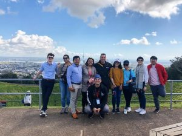
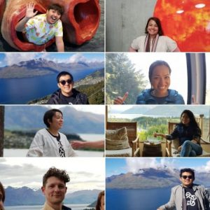
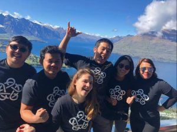

Sustainability trip: ASEAN Young Business Leaders Initiative (YBLI)
17 Jan 2020
Sustainability trip in New Zealand from our manager: Uyen Le
This New Zealand trip took me one big step further on my journey of social entrepreneurship and sustainable development.

Ms. Uyen Le and the talented young business leaders
A Journey of Inspiration
A couple of weeks ago, thanks to our contribution to society through our impacts of improving local people’s lives and promoting eco-friendly consumption,
I was privileged to participate into a program of ASEAN Young Business Leaders Initiative (YBLI) Sustainability by Asia New Zealand Foundation and it
took me one big step further on my journey of social entrepreneurship and sustainable development.
I have met many people who have put lots of efforts to promote a sustainable lifestyle. An Ecostore founded by the Ecoman who are battling nasty
chemicals to provide healthy household supplies. Sustainable Coastlines founded by a passionate surfer to protect the ocean from trash and plastic bags.
Awesome mates are doing sustainable housing, sustainable fashion through organic cotton from Thailand, recycling business from Myanmar, sustainable tourism NZ,
Philippines and Triip.me proudly from Vietnam or sustainable fishing from my Philippines woman or innovative material from mushroom from Indonesia. All of them
had really boosted my work energy again by what they are doing. We are from different fields and different countries but hold one belief and passion for doing
business while still conscious of social, environment values global issues like sustainability.

Sustainable development trip in New Zealand: ASEAN Young Bussiness Leaders Initiative (YBLI) - Uyen Le
Adi Reza Nugroho. Dhang Tecson. Raf Dionisio. Lam Thi Thuy Passawee Patsy Tapasanan, Adam McConnochie. Okkaphyo Mg and me – Uyen Le. We are from different fields
and different countries but hold one belief and passion for doing business while still conscious of society. environment values global issues like sustainability.
Sustainable Lifestyle from Handicraft Products
And what I especially respect is the value of the life values of Kiwis: Origin, Connection, and Sustainability. In most presentations and introductions,
I saw the pride in their eyes when introducing their previous generations and the way they treat the next generations. I saw the appreciation of the connection
between people and the connection between people with nature. I saw how they are conscious of sustainable consuming like zero waste, saying no to plastic,
no printer in offices. Looking at the way that they try their best to contribute to building a sustainable life gives me more and more motivation to continue
focusing on what our business is doing: raise awareness and promote a sustainable lifestyle through producing eco – friendly but also innovative handicraft products.

Incredible people that Ms. Uyen Le has met
For the Viet Trang team, we always strive to develop more and more as a sustainable manufacturer to raise awareness and promote a sustainable lifestyle effectively.
By producing nature fiber handicrafts totally made from natural fibers and without coloring, we are proud of protecting natural raw materials and bringing to customers
not just beautiful, innovative but also eco-friendly and non-toxic products.
This program has really boosted my energy and consolidates our business philosophy: doing good while doing business and keep growing our business to bring more impacts
to society and the environment.